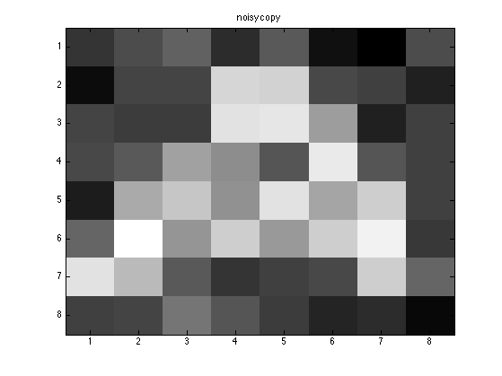
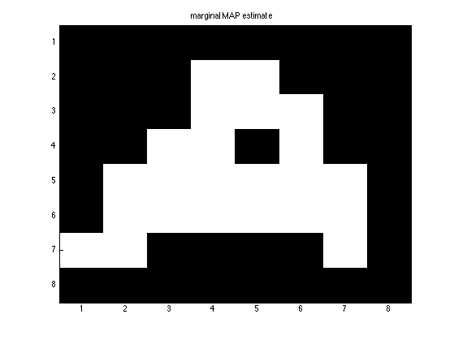

Contents
Image denoising using an mrf and exact inference
Generate Data
setSeed(0);
if imagesToolboxInstalled
sigma = 1;
data = loadData('letterA');
img = imresize(data.A, [8, 8], 'cubic');
[M, N] = size(img);
img = double(img);
m = mean(img(:));
imgOrig = img;
img = +1*(img>m) + -1*(img<m);
else
img =[
1 1 -1 1 1 -1 1 1
1 1 -1 1 1 -1 1 1
-1 -1 -1 1 1 -1 -1 -1
1 1 1 -1 -1 1 1 1
1 1 1 -1 -1 1 1 1
-1 -1 -1 1 1 -1 -1 -1
1 1 -1 1 1 -1 1 1
1 1 -1 1 1 -1 1 1
];
end
figure;
imagesc(img); colormap('gray'); title('original image');
sigma = 0.5;
[M, N] = size(img);
y = img + sigma*randn(M, N);
figure;
imagesc(y);colormap('gray'); title('noisy copy');


Create the model
sigma2 = sigma.^2;
localCPD = condGaussCpdCreate( [-1 +1], [sigma2, sigma2]);
J = 0.5;
edgePot = exp([J -J; -J J]);
nodePot = [0.5 0.5];
G = mkGrid(M, N);
model = mrfCreate(G, 'nodePots', nodePot, 'edgePots', edgePot,...
'localCPDs', localCPD);
map = mrfMap(model, 'localev', rowvec(y));
figure;
imagesc(reshape(map, M, N));colormap('gray'); title('MAP estimate');
nodeBels = mrfInferNodes(model, 'localev', rowvec(y));
maxMarginals = maxidx(tfMarg2Mat(nodeBels), [], 1) - 1;
figure;
imagesc(reshape(maxMarginals, M, N));
colormap('gray'); title('marginal MAP estimate');
